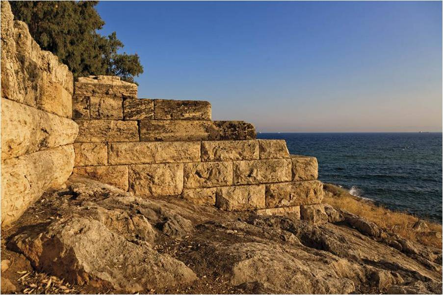
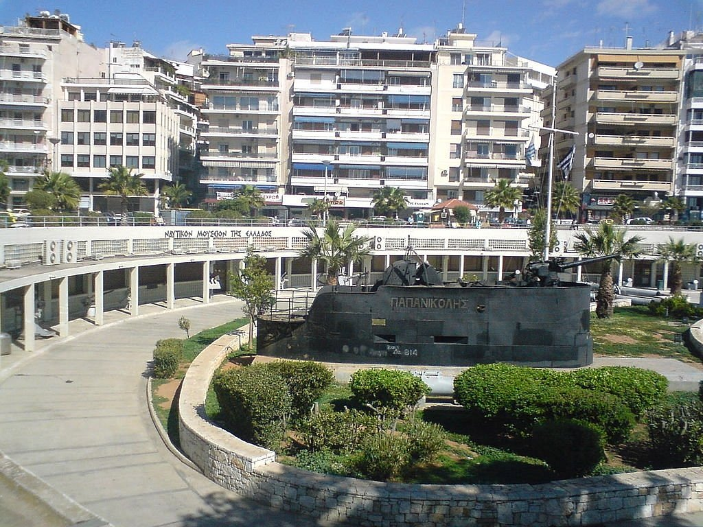
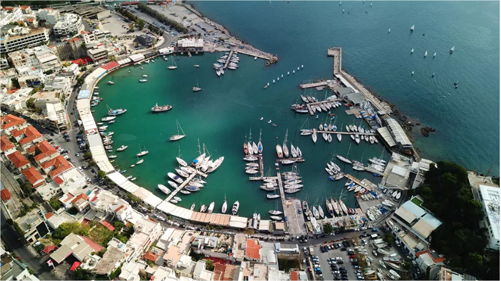

Ο Πειραιάς είναι πόλη, τμήμα του Πολεοδομικού Συγκροτήματος Αθηνών-Πειραιώς, «η τρίτη πόλη της Ελλάδας μετά την Αθήνα και τη Θεσσαλονίκη» με δική της περιφερειακή αστική ζώνη, και έδρα του σημαντικότερου λιμανιού της Ελλάδας. Ο Δήμος Πειραιά, έχει σύμφωνα με την Απογραφή του 2011 έκταση 10,9 τ. χλμ. και πληθυσμό 163.688 κατοίκους.
Ενδιαφέρον σημεία
Μακρά Τείχη

Μακρά Τείχη
Τα τείχη και οι πύλες του αρχαίου Πειραιά. Τα ερείπια των οχυρώσεων βρίσκονται σε καλή κατάσταση ως σήμερα. Το 493 π.Χ. ο Θεμιστοκλής ξεκίνησε την κατασκευή οχυρώσεων γύρω από τον Πειραιά. Οι δύο κύριες πύλες των οχυρώσεων βρίσκονται στην είσοδο της σύγχρονης πόλης στην οδό του 34ου Συντάγματος. Η Πύλη του Άστεως είναι η πιο δυτική πύλη, η οποία περικλείεται από τις οδούς Πύλης, Ομηρίδου, Σκλυλίτση και Κολοκοτρώνη. Ο κύριος δρόμος για τις μεταφορές προς την Αθήνα περνούσε μέσα από την Πύλη του Άστεως. Τα Μακρά Τείχη και η Μέση Πύλη. Ο σκοπός κατασκευής των Μακρών Τειχών ήταν η σύνδεση της Αθήνας με το επίνειό της. Τα Μακρά Τείχη (Βόρειο, Φαληρικό και το Μέσο ή Νότιο τείχος) δημιουργούσαν έναν ασφαλή διάδρομο ανάμεσα στην Αθήνα και τον Πειραιά για τον πληθυσμό της Αττικής κατά τον Πελοποννησιακό Πόλεμο. Η Μέση Πύλη, κοντά στην Πύλη του Άστεως, είναι πολύ παρόμοια με το Δίπυλον της Αθήνας, αλλά μικρότερη. Είχε κατασκευαστεί για διακίνηση χρησιμοποιώντας τον διάδρομο των Μακρών Τειχών. Η Ηετιώνεια Πύλη βρίσκεται στη βορεινή πλευρά του κύριου λιμένα, του Κάνθαρου, στην περιοχή της Δραπετσώνας. Το φρούριο της Ηετιωνείας κατασκευάστηκε με σκοπό τον έλεγχο του λιμανιού. Δύο τμήματα του τείχους ξεκινούν απ’ αυτή την πύλη. Η πρώτη στα ανατολικά προς τον λιμένα. Η δεύτερη προς τον εξωτερικό λιμένα. Δύο ισχυροί κυκλικοί πύργοι της ελληνιστικής περιόδου ορθώνονταν στα πλευρά της πύλης. Το τείχος προστατεύεται από μια βαθιά τάφρο σκαμμένη μέσα στον βράχο.
Ναυτικό Μουσείο

Ναυτικό Μουσείο
Το Ναυτικό Μουσείο της Ελλάδος υπήρξε διακαής πόθος των ελλήνων πλοιάρχων. Του νεοσύστατου κράτους. Ήδη από το 1867 έγιναν προσπάθειες να δημιουργηθεί ένας χώρος με σκοπό την αναζήτηση, περισυλλογή, διαφύλαξη και έκθεση των ιστορικών κειμηλίων που αναφέρονται στους ναυτικούς αγώνες, καθώς και σε κάθε θαλάσσια δραστηριότητα των Ελλήνων από την προϊστορική εποχή ως τις μέρες μας. Τα εγκαίνια του Μουσείου πραγματοποιούνται 4/08/1967. Μέσα από τις δράσεις του μελετά και τεκμηριώνει την ναυτική ιστορία. Παράλληλα καλλιεργεί την αγάπη για την θάλασσα και την προστασία της με σύγχρονες εκπαιδευτικές μεθόδους και δράσεις. Στην είσοδο του Μουσείου έχει ενσωματωθεί ένα τμήμα του αρχαίου τείχους του Κόνωνος. Ο επισκέπτης μπορεί να θαυμάσει τον αύλειο χώρο με την αρχαία Ιστορία και σύγχρονη ιστορία να ξεδιπλώνεται μπροστά του. Γλυπτά και σημαντικά υπαίθρια εκθέματα όπως ο πυργίσκος του ιστορικού υποβρυχίου Παπανικολής και άγκυρες πλοίων της εποχής της Ναυμαχίας του Ναβαρίνου. Στους εκθεσιακούς Χώρους τα 2500 εκθέματα ταξιδευουν τον επισκέπτη από την προϊστορία στην Σύγχρονη εποχή. Στο χώρο του Μουσείου υπάρχει, επίσης, Ναυτική Βιβλιοθήκη ανοικτή στο κοινό κατά τις ημέρες και ώρες λειτουργίας του, η οποία διαθέτει περισσότερους από 17.000 τόμους βιβλίων και περιοδικών με κύριο θέμα τη ναυτική ιστορία, επιστήμη και τέχνη.
Μικρολίμανο

Ναυτικό Μουσείο
Το Μικρολίμανο ή Φανάρι ή λιμένας Κουμουνδούρου, πρώην Τουρκολίμανο και στην αρχαιότητα Λιμένας Μουνιχίας, αποτελεί σήμερα τουριστική τοποθεσία και περιλαμβάνεται στην ευρύτερη συνοικία της Καστέλλας. Βρίσκεται στα βορειοανατολικά της Πειραϊκής χερσονήσου συνορεύοντας με την συνοικία του Νέου Φαλήρου. Μόλις μπείτε στην καρδιά του Μικρολίμανου θα σας μαγέψει αυτή η γραφική και άκρως νησιώτικη εικόνα με τα σπίτια αμφιθεατρικά κτισμένα στο λόφο, ενώ δίπλα σας θα βλέπετε αγκυροβολημένα κότερα και μικρά καΐκια.Τα δεκάδες μαγαζάκια που λειτουργούν κατά μήκος της παραλίας ολοκληρώνουν αυτή την εικόνα και αίσθηση νησιού.Tο φαγητό στο Μικρολίμανο φαίνεται πως τα τελευταία χρόνια έχει ανοίξει τους ορίζοντες του και είναι σε ετοιμότητα για να σας ταξιδέψει first-class στις κουζίνες του κόσμου, με διαβατήριο τα πιο γευστικά, αμιγώς επηρεασμένα ή απλώς πειραγμένα από τις διεθνείς κουζίνες, μενού. Απολαμβάνοντας τη θέα και το θαλασσινό αεράκι, είτε επιλέξετε τις παραδοσιακές γεύσεις είτε πιο fusion πρότασεις,ένα είναι βέβαιο: το σημερινό σας γεύμα θα σας ανταμείψει!